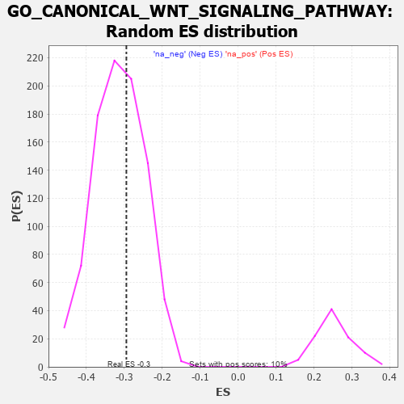

| | | Dataset | 7d |
| Phenotype | NoPhenotypeAvailable |
| Upregulated in class | na_neg |
| GeneSet | GO_CANONICAL_WNT_SIGNALING_PATHWAY |
| Enrichment Score (ES) | -0.29473567 |
| Normalized Enrichment Score (NES) | -0.93733877 |
| Nominal p-value | 0.61067855 |
| FDR q-value | 0.91568035 |
| FWER p-Value | 1.0 |
Table: GSEA Results Summary
 Fig 1: Enrichment plot: GO_CANONICAL_WNT_SIGNALING_PATHWAY
Fig 1: Enrichment plot: GO_CANONICAL_WNT_SIGNALING_PATHWAY
Profile of the Running ES Score & Positions of GeneSet Members on the Rank Ordered List
| PROBE | GENE SYMBOL | GENE_TITLE | RANK IN GENE LIST | RANK METRIC SCORE | RUNNING ES | CORE ENRICHMENT | | 1 | AXIN1 | | | 166 | 1.159 | 0.0031 | No |
| 2 | WNT16 | | | 198 | 1.072 | 0.0215 | No |
| 3 | GSK3A | | | 351 | 0.745 | 0.0177 | No |
| 4 | LGR6 | | | 360 | 0.738 | 0.0320 | No |
| 5 | AXIN2 | | | 383 | 0.713 | 0.0441 | No |
| 6 | NLE1 | | | 565 | 0.609 | 0.0338 | No |
| 7 | NOTUM | | | 726 | 0.553 | 0.0250 | No |
| 8 | PORCN | | | 838 | 0.522 | 0.0218 | No |
| 9 | AMFR | | | 856 | 0.518 | 0.0304 | No |
| 10 | WLS | | | 907 | 0.505 | 0.0346 | No |
| 11 | DVL3 | | | 971 | 0.490 | 0.0368 | No |
| 12 | YAP1 | | | 1041 | 0.475 | 0.0380 | No |
| 13 | FZD10 | | | 1065 | 0.470 | 0.0448 | No |
| 14 | SRC | | | 1128 | 0.459 | 0.0465 | No |
| 15 | PSMD7 | | | 1152 | 0.454 | 0.0531 | No |
| 16 | CCNY | | | 1168 | 0.451 | 0.0605 | No |
| 17 | PSMD2 | | | 1181 | 0.450 | 0.0684 | No |
| 18 | CDK14 | | | 1217 | 0.444 | 0.0732 | No |
| 19 | RBX1 | | | 1445 | 0.401 | 0.0527 | No |
| 20 | FZD1 | | | 1574 | 0.379 | 0.0444 | No |
| 21 | BIRC8 | | | 1615 | 0.372 | 0.0470 | No |
| 22 | LRP5 | | | 1769 | 0.342 | 0.0348 | No |
| 23 | TLE4 | | | 1775 | 0.341 | 0.0412 | No |
| 24 | PSMD4 | | | 1811 | 0.335 | 0.0438 | No |
| 25 | TCF7 | | | 1848 | 0.328 | 0.0460 | No |
| 26 | PSMD6 | | | 1858 | 0.326 | 0.0517 | No |
| 27 | TLE3 | | | 1863 | 0.325 | 0.0579 | No |
| 28 | CUL3 | | | 1893 | 0.321 | 0.0609 | No |
| 29 | JADE1 | | | 2141 | 0.286 | 0.0355 | No |
| 30 | PSME4 | | | 2143 | 0.285 | 0.0413 | No |
| 31 | PSMF1 | | | 2251 | 0.268 | 0.0333 | No |
| 32 | GSKIP | | | 2304 | 0.259 | 0.0321 | No |
| 33 | UBAC2 | | | 2488 | 0.229 | 0.0137 | No |
| 34 | PSMD5 | | | 2560 | 0.218 | 0.0092 | No |
| 35 | MITF | | | 2659 | 0.205 | 0.0010 | No |
| 36 | KDM6A | | | 2690 | 0.200 | 0.0014 | No |
| 37 | DAPK3 | | | 2880 | 0.169 | -0.0191 | No |
| 38 | FGFR2 | | | 2895 | 0.167 | -0.0174 | No |
| 39 | GID8 | | | 2978 | 0.153 | -0.0246 | No |
| 40 | WNT4 | | | 3023 | 0.146 | -0.0271 | No |
| 41 | LEF1 | | | 3037 | 0.144 | -0.0258 | No |
| 42 | HDAC1 | | | 3086 | 0.138 | -0.0290 | No |
| 43 | SFRP5 | | | 3154 | 0.129 | -0.0348 | No |
| 44 | PSMD9 | | | 3179 | 0.125 | -0.0352 | No |
| 45 | SMAD3 | | | 3303 | 0.105 | -0.0487 | No |
| 46 | DDX3X | | | 3388 | 0.091 | -0.0574 | No |
| 47 | GLI1 | | | 3489 | 0.079 | -0.0685 | No |
| 48 | UBR5 | | | 3518 | 0.074 | -0.0705 | No |
| 49 | PIN1 | | | 3543 | 0.069 | -0.0721 | No |
| 50 | PPM1A | | | 3953 | 0.002 | -0.1240 | No |
| 51 | VPS35 | | | 3989 | -0.006 | -0.1283 | No |
| 52 | SFRP2 | | | 4065 | -0.018 | -0.1374 | No |
| 53 | WNT2 | | | 4084 | -0.021 | -0.1393 | No |
| 54 | PSME3 | | | 4280 | -0.056 | -0.1629 | No |
| 55 | WNT11 | | | 4282 | -0.056 | -0.1618 | No |
| 56 | LRRK2 | | | 4467 | -0.087 | -0.1834 | No |
| 57 | ILK | | | 4510 | -0.096 | -0.1867 | No |
| 58 | WNT5B | | | 4517 | -0.098 | -0.1854 | No |
| 59 | APC | | | 4558 | -0.107 | -0.1883 | No |
| 60 | GATA3 | | | 4614 | -0.120 | -0.1927 | No |
| 61 | PTK7 | | | 4687 | -0.136 | -0.1990 | No |
| 62 | FZD4 | | | 4940 | -0.186 | -0.2271 | No |
| 63 | KLF4 | | | 5005 | -0.198 | -0.2311 | No |
| 64 | TNKS2 | | | 5239 | -0.254 | -0.2554 | No |
| 65 | PTEN | | | 5262 | -0.261 | -0.2528 | No |
| 66 | FZD5 | | | 5386 | -0.292 | -0.2623 | No |
| 67 | LATS1 | | | 5412 | -0.298 | -0.2592 | No |
| 68 | PPM1B | | | 5422 | -0.300 | -0.2541 | No |
| 69 | ROR2 | | | 5626 | -0.353 | -0.2726 | No |
| 70 | ASPM | | | 5637 | -0.358 | -0.2664 | No |
| 71 | WNK1 | | | 5650 | -0.362 | -0.2604 | No |
| 72 | PSMD1 | | | 5674 | -0.367 | -0.2556 | No |
| 73 | STK11 | | | 5922 | -0.443 | -0.2778 | No |
| 74 | FZD8 | | | 6051 | -0.490 | -0.2838 | No |
| 75 | TNKS | | | 6138 | -0.516 | -0.2840 | Yes |
| 76 | STK4 | | | 6145 | -0.518 | -0.2740 | Yes |
| 77 | EGR1 | | | 6165 | -0.527 | -0.2654 | Yes |
| 78 | TRPM4 | | | 6390 | -0.612 | -0.2811 | Yes |
| 79 | SOX2 | | | 6477 | -0.652 | -0.2784 | Yes |
| 80 | KANK1 | | | 6536 | -0.678 | -0.2717 | Yes |
| 81 | MKS1 | | | 6607 | -0.715 | -0.2657 | Yes |
| 82 | SCYL2 | | | 6621 | -0.724 | -0.2522 | Yes |
| 83 | WWTR1 | | | 6631 | -0.729 | -0.2382 | Yes |
| 84 | RAB5A | | | 6655 | -0.741 | -0.2257 | Yes |
| 85 | EGFR | | | 6708 | -0.765 | -0.2163 | Yes |
| 86 | GSK3B | | | 6719 | -0.768 | -0.2016 | Yes |
| 87 | NPHP4 | | | 6991 | -0.931 | -0.2166 | Yes |
| 88 | RYK | | | 7102 | -1.000 | -0.2097 | Yes |
| 89 | CYLD | | | 7333 | -1.206 | -0.2138 | Yes |
| 90 | PLPP3 | | | 7740 | -1.876 | -0.2263 | Yes |
| 91 | DLX5 | | | 7845 | -2.378 | -0.1900 | Yes |
| 92 | PSMD3 | | | 7907 | -2.887 | -0.1376 | Yes |
| 93 | PSMD8 | | | 7931 | -3.286 | -0.0720 | Yes |
| 94 | XIAP | | | 7947 | -3.696 | 0.0030 | Yes |
Table: GSEA details [plain text format]

Fig 2: GO_CANONICAL_WNT_SIGNALING_PATHWAY: Random ES distribution
Gene set null distribution of ES for GO_CANONICAL_WNT_SIGNALING_PATHWAY